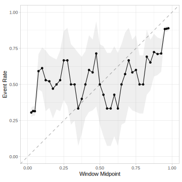
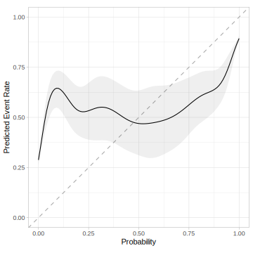
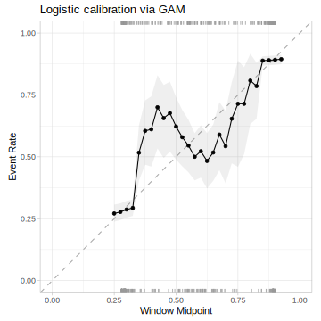
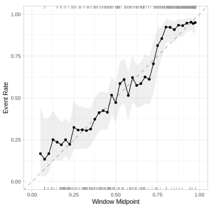

library(tidymodels)
library(probably)
library(discrim)
tidymodels_prefer()
theme_set(theme_bw())
options(pillar.advice = FALSE, pillar.min_title_chars = Inf)An introduction to calibration with tidymodels
probably
yardstick
classification
Learn how the probably package can improve classification and regression models.
To use code in this article, you will need to install the following packages: discrim, klaR, probably, and tidymodels. The probably package should be version 1.0.0 or greater.
There are essentially three different parts to a predictive model:
- the pre-processing stage (e.g., feature engineering, normalization, etc.)
- model fitting (actually training the model)
- post-processing (such as optimizing a probability threshold)
This article demonstrates a post-processing tool called model calibration. After the model fit, we might be able to improve a model by altering the predicted values.
A classification model is well-calibrated if its probability estimate is consistent with the rate that the event occurs “in the wild.” If you are not familiar with calibration, there are references at the end of this article.
To get started, load some packages:
An example: predicting cell segmentation quality
The modeldata package contains a data set called cells. Initially distributed by Hill and Haney (2007), they showed how to create models that predict the quality of the image analysis of cells. The outcome has two levels "PS" (for poorly segmented images) or "WS" (well-segmented). There are 56 image features that can be used to build a classifier.
Let’s load the data, remove an unwanted column, and look at the outcome frequencies:
data(cells)
cells$case <- NULL
dim(cells)
#> [1] 2019 57
cells %>% count(class)
#> # A tibble: 2 × 2
#> class n
#> <fct> <int>
#> 1 PS 1300
#> 2 WS 719There is a class imbalance but that will not affect our work here.
Let’s make a 75% to 25% split of the data into training and testing using initial_split(). We’ll also create a set of 10-fold cross-validation indices for model resampling.
set.seed(8928)
split <- initial_split(cells, strata = class)
cells_tr <- training(split)
cells_te <- testing(split)
cells_rs <- vfold_cv(cells_tr, strata = class)Now that there are data to be modeled, let’s get to it!
A naive Bayes model
We’ll show the utility of calibration tools by using a type of model that, in this instance, is likely to produce a poorly calibrated model. The naive Bayes classifier is a well-established model that assumes that the predictors are statistically independent of one another (to simplify the calculations). While that is certainly not the case for these data, the model can be effective at discriminating between the classes. Unfortunately, when there are many predictors in the model, it has a tendency to produce class probability distributions that are pathological. The predictions tend to gravitate to values near zero or one, producing distributions that are “U”-shaped (Kuhn and Johnson, 2013).
To demonstrate, let’s set up the model:
bayes_wflow <-
workflow() %>%
add_formula(class ~ .) %>%
add_model(naive_Bayes())We’ll resample the model first so that we can get a good assessment of the results. During the resampling process, two metrics are used to judge how well the model worked. First, the area under the ROC curve is used to measure the ability of the model to separate the classes (using probability predictions). Second, the Brier score can measure how close the probability estimates are to the actual outcome values (zero or one). The collect_metrics() function shows the resampling estimates:
cls_met <- metric_set(roc_auc, brier_class)
# We'll save the out-of-sample predictions to visualize them.
ctrl <- control_resamples(save_pred = TRUE)
bayes_res <-
bayes_wflow %>%
fit_resamples(cells_rs, metrics = cls_met, control = ctrl)
collect_metrics(bayes_res)
#> # A tibble: 2 × 6
#> .metric .estimator mean n std_err .config
#> <chr> <chr> <dbl> <int> <dbl> <chr>
#> 1 brier_class binary 0.202 10 0.0101 Preprocessor1_Model1
#> 2 roc_auc binary 0.853 10 0.00930 Preprocessor1_Model1The ROC score is impressive! However, the Brier value indicates that the probability values, while discriminating well, are not very realistic. A value of 0.25 is the “bad model” threshold when there are two classes (a value of zero being the best possible result).
But is it calibrated?
Spoilers: no. It is not.
The first clue is the extremely U-shaped distribution of the probability scores (facetted by the true class value):
collect_predictions(bayes_res) %>%
ggplot(aes(.pred_PS)) +
geom_histogram(col = "white", bins = 40) +
facet_wrap(~ class, ncol = 1) +
geom_rug(col = "blue", alpha = 1 / 2) +
labs(x = "Probability Estimate of PS")
There are almost no cells with moderate probability estimates. Furthermore, when the model is incorrect, it is “confidently incorrect”.
The probably package has tools for visualizing and correcting models with poor calibration properties.
The most common plot is to break the predictions into about ten equally sized buckets and compute the actual event rate within each. For example, if a bin captures the samples predicted to be poorly segmented with probabilities between 20% and 30%, we should expect about a 25% event rate (i.e., the bin midpoint) within that partition. Here’s a plot with ten bins:
cal_plot_breaks(bayes_res)The probabilities are not showing very good accuracy.
There is also a similar function that can use moving windows with overlapping partitions. This provides a little more detail:
cal_plot_windowed(bayes_res, step_size = 0.025)
Bad. Still bad.
Finally, for two class outcomes, we can fit a logistic generalized additive model (GAM) and examine the trend.
cal_plot_logistic(bayes_res)
Ooof.
Remediation
The good news is that we can do something about this. There are tools to “fix” the probability estimates so that they have better properties, such as falling along the diagonal lines in the diagnostic plots shown above. Different methods improve the predictions in different ways.
The most common approach is the fit a logistic regression model to the data (with the probability estimates as the predictor). The probability predictions from this model are then used as the calibrated estimate. By default, a generalized additive model is used for this fit, but the smooth = FALSE argument can use simple linear effects.
If effect, the GAM model estimates the probability regions where the model is off (as shown in the diagnostic plot). For example, suppose that when the model predicts a 2% event rate, the GAM model estimates that it under-predicts the probability by 5% (relative to the observed data). Given this gap, new predictions are adjusted up so that the probability estimates are more in-line with the data.
How do we know if this works? There are a set of cal_validate_*() functions that can use holdout data to resample the model with and without the calibration tool of choice. Since we already resampled the model, we’ll use those results to estimate 10 more logistic regressions and use the out-of-sample data to estimate performance.
collect_metrics() can again be used to see the performance statistics. We’ll also use cal_plot_windowed() on the calibrated holdout data to get a visual assessment:
logit_val <- cal_validate_logistic(bayes_res, metrics = cls_met, save_pred = TRUE)
collect_metrics(logit_val)
#> # A tibble: 4 × 7
#> .metric .type .estimator mean n std_err .config
#> <chr> <chr> <chr> <dbl> <int> <dbl> <chr>
#> 1 brier_class uncalibrated binary 0.202 10 0.0101 config
#> 2 roc_auc uncalibrated binary 0.853 10 0.00929 config
#> 3 brier_class calibrated binary 0.155 10 0.00603 config
#> 4 roc_auc calibrated binary 0.852 10 0.00956 config
collect_predictions(logit_val) %>%
filter(.type == "calibrated") %>%
cal_plot_windowed(truth = class, estimate = .pred_PS, step_size = 0.025) +
ggtitle("Logistic calibration via GAM")
That’s a lot better but it is problematic that the calibrated predictions do not reach zero or one.
A different approach is to use isotonic regression. This method can result in very few unique probability estimates. The probably package has a version of isotonic regression that resamples the process to produce more unique probabilities:
set.seed(1212)
iso_val <- cal_validate_isotonic_boot(bayes_res, metrics = cls_met,
save_pred = TRUE, times = 25)
collect_metrics(iso_val)
#> # A tibble: 4 × 7
#> .metric .type .estimator mean n std_err .config
#> <chr> <chr> <chr> <dbl> <int> <dbl> <chr>
#> 1 brier_class uncalibrated binary 0.202 10 0.0101 config
#> 2 roc_auc uncalibrated binary 0.853 10 0.00929 config
#> 3 brier_class calibrated binary 0.151 10 0.00530 config
#> 4 roc_auc calibrated binary 0.853 10 0.00920 config
collect_predictions(iso_val) %>%
filter(.type == "calibrated") %>%
cal_plot_windowed(truth = class, estimate = .pred_PS, step_size = 0.025) +
ggtitle("Isotonic regression calibration")Much better. However, there is a slight bias since the estimated points are consistently above the identity line on the 45-degree angle.
Finally, we can also test out Beta calibration:
beta_val <- cal_validate_beta(bayes_res, metrics = cls_met, save_pred = TRUE)
collect_metrics(beta_val)
#> # A tibble: 4 × 7
#> .metric .type .estimator mean n std_err .config
#> <chr> <chr> <chr> <dbl> <int> <dbl> <chr>
#> 1 brier_class uncalibrated binary 0.202 10 0.0101 config
#> 2 roc_auc uncalibrated binary 0.853 10 0.00929 config
#> 3 brier_class calibrated binary 0.146 10 0.00438 config
#> 4 roc_auc calibrated binary 0.853 10 0.00931 config
collect_predictions(beta_val) %>%
filter(.type == "calibrated") %>%
cal_plot_windowed(truth = class, estimate = .pred_PS, step_size = 0.025) +
ggtitle("Beta calibration")Also a big improvement but it does poorly at the lower end of the scale.
Beta calibration appears to have the best results. We’ll save a model that is trained using all of the out-of-sample predictions from the original naive Bayes resampling results.
We can also fit the final naive Bayes model to predict the test set:
cell_cal <- cal_estimate_beta(bayes_res)
bayes_fit <- bayes_wflow %>% fit(data = cells_tr)The cell_cal object can be used to enact the calibration for new predictions (as we’ll see in a minute).
Test set results
First, we make our ordinary predictions:
cell_test_pred <- augment(bayes_fit, new_data = cells_te)
cell_test_pred %>% cls_met(class, .pred_PS)
#> # A tibble: 2 × 3
#> .metric .estimator .estimate
#> <chr> <chr> <dbl>
#> 1 roc_auc binary 0.839
#> 2 brier_class binary 0.225These metric estimates are very consistent with the resampled performance estimates.
We can then use our cell_cal object with the cal_apply() function:
cell_test_cal_pred <-
cell_test_pred %>%
cal_apply(cell_cal)
cell_test_cal_pred %>% dplyr::select(class, starts_with(".pred_"))
#> # A tibble: 505 × 4
#> class .pred_class .pred_PS .pred_WS
#> <fct> <fct> <dbl> <dbl>
#> 1 PS PS 0.881 0.119
#> 2 WS WS 0.217 0.783
#> 3 WS WS 0.0756 0.924
#> 4 PS PS 0.832 0.168
#> 5 PS PS 0.946 0.0545
#> 6 WS WS 0.211 0.789
#> 7 PS PS 0.851 0.149
#> 8 PS PS 0.723 0.277
#> 9 WS WS 0.342 0.658
#> 10 WS PS 0.603 0.397
#> # ℹ 495 more rowsNote that cal_apply() recomputed the hard class predictions in the .pred_class column. It is possible that the changes in the probability estimates could invalidate the original hard class estimates.
What do the calibrated test set results show?
cell_test_cal_pred %>% cls_met(class, .pred_PS)
#> # A tibble: 2 × 3
#> .metric .estimator .estimate
#> <chr> <chr> <dbl>
#> 1 roc_auc binary 0.839
#> 2 brier_class binary 0.154
cell_test_cal_pred %>%
cal_plot_windowed(truth = class, estimate = .pred_PS, step_size = 0.025)
Much better. The test set results also agree with the results from cal_validate_beta().
Other model types
probably can also calibrate classification models with more than two outcome levels. The functions cal_*_multinomial() use a multinomial model in the same spirit as the logistic regression model. Isotonic and Beta calibration can also be used via a “one versus all” approach that builds a set of binary calibrators and normalizes their results at the end (to ensure that they add to one).
For regression models, there is cal_plot_regression() and cal_*_linear(). The latter uses lm() or mgcv::gam() to create a calibrator object.
Some background references
Kull, Meelis, Telmo M. Silva Filho, and Peter Flach. “Beyond sigmoids: How to obtain well-calibrated probabilities from binary classifiers with beta calibration.” (2017): 5052-5080
Niculescu-Mizil, Alexandru, and Rich Caruana. “Predicting good probabilities with supervised learning.” In Proceedings of the 22nd international conference on Machine learning, pp. 625-632. 2005.
Session information
#> ─ Session info ─────────────────────────────────────────────────────
#> version R version 4.4.2 (2024-10-31)
#> language (EN)
#> date 2025-03-24
#> pandoc 3.6.1
#> quarto 1.6.42
#>
#> ─ Packages ─────────────────────────────────────────────────────────
#> package version date (UTC) source
#> broom 1.0.7 2024-09-26 CRAN (R 4.4.1)
#> dials 1.4.0 2025-02-13 CRAN (R 4.4.2)
#> discrim 1.0.1 2023-03-08 CRAN (R 4.4.0)
#> dplyr 1.1.4 2023-11-17 CRAN (R 4.4.0)
#> ggplot2 3.5.1 2024-04-23 CRAN (R 4.4.0)
#> infer 1.0.7 2024-03-25 CRAN (R 4.4.0)
#> klaR 1.7-3 2023-12-13 CRAN (R 4.4.0)
#> parsnip 1.3.1 2025-03-12 CRAN (R 4.4.1)
#> probably 1.0.3 2024-02-23 CRAN (R 4.4.0)
#> purrr 1.0.4 2025-02-05 CRAN (R 4.4.1)
#> recipes 1.2.0 2025-03-17 CRAN (R 4.4.1)
#> rlang 1.1.5 2025-01-17 CRAN (R 4.4.2)
#> rsample 1.2.1 2024-03-25 CRAN (R 4.4.0)
#> tibble 3.2.1 2023-03-20 CRAN (R 4.4.0)
#> tidymodels 1.3.0 2025-02-21 CRAN (R 4.4.1)
#> tune 1.3.0 2025-02-21 CRAN (R 4.4.1)
#> workflows 1.2.0 2025-02-19 CRAN (R 4.4.1)
#> yardstick 1.3.2 2025-01-22 CRAN (R 4.4.1)
#>
#> ────────────────────────────────────────────────────────────────────